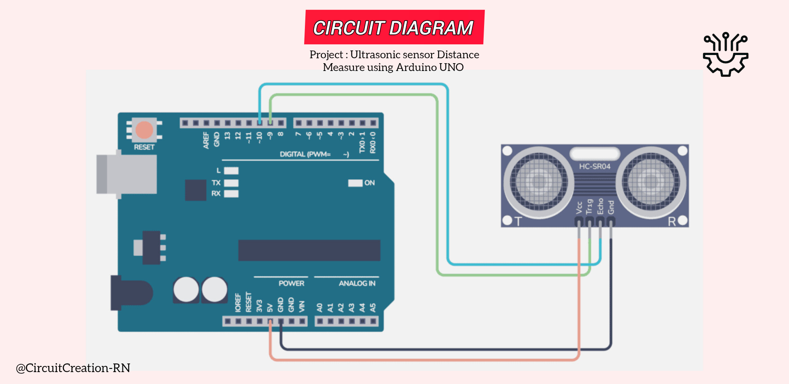

This beginner friendly Arduino project demonstrates how to measure distance using an HC-SR04 Ultrasonic Sensor with an Arduino UNO. The sensor calculates the distance to nearby objects and displays the values on the Serial Monitor.

Connect the VCC pin of the HC-SR04 sensor to the 5V pin of the Arduino UNO.
Connect the GND pin of the HC-SR04 sensor to the GND pin of the Arduino UNO.
Connect the TRIG pin of the sensor to Digital Pin 9 of the Arduino UNO.
Connect the ECHO pin of the sensor to Digital Pin 10 of the Arduino UNO.
Open the Arduinodroid app, paste the ultrasonic sensor code, Compile the code, and upload the program.
The HC-SR04 sensor sends ultrasonic sound waves through the TRIG pin. When the waves hit an object, they bounce back to the sensor and are received by the ECHO pin.
The Arduino measures the travel time of the sound waves and calculates the distance, then displays the result on the Serial Monitor.
/*
Arduino LED Blink with Mobile Phone
Components:
- Arduino UNO R3
- Ultrasonic sensor
- Arduino Cable
- Jumper wires
- OTG Cable
Author: Circuit Creation RN
*/
const int trigPin = 9;
const int echoPin = 10;
long duration;
float distance;
void setup() {
pinMode(trigPin, OUTPUT);
pinMode(echoPin, INPUT);
Serial.begin(9600);
}
void loop() {
digitalWrite(trigPin, LOW);
delayMicroseconds(2);
digitalWrite(trigPin, HIGH);
delayMicroseconds(10);
digitalWrite(trigPin, LOW);
duration = pulseIn(echoPin, HIGH);
distance = duration * 0.0343 / 2;
Serial.print("Distance: ");
Serial.print(distance);
Serial.println(" cm");
delay(500);
}
The Arduino triggers the ultrasonic sensor by sending a short pulse to the TRIG pin. It measures the duration of the returning echo pulse and converts this time into distance using the speed of sound. The calculated distance is continuously displayed on the Serial Monitor.
You can write, compile, and upload Arduino sketches directly from your Android phone using the Arduinodroid app with an OTG cable no laptop or PC required.
Download from Google PlayAfter uploading the program, the HC-SR04 sensor continuously measures the distance to nearby objects. The Arduino calculates the distance and displays the measured value in centimeters on the Serial Monitor in real time.
Check the wiring, ensure the sensor faces an object, and verify the baud rate matches the code.
The HC-SR04 can typically measure distances from about 2 cm to 400 cm.
Yes. The HC-SR04 works directly with the Arduino UNO's 5V and GND pins.
{kind=link}